Södermalm i tid och rum
Ur Människor kring en bro, Josef Kjellgren, 1935
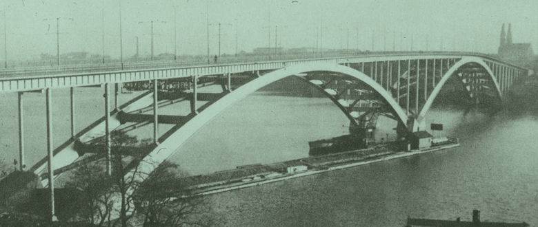
Debatterna i stadsfullmäktige vidrörde emellertid aldrig dessa adiafora. Vem kan tro något sådant? Frågan under de långa sessionerna var blott en enda: "- Har staden råd att bygga denna bro, eller har den inte råd?" Och den frågan hade gjorts under många år. Den bordlades, ställdes på framtiden, den togs upp till ny behandling. Problemet var grundligt genomdiskuterat och det hade många gånger granskats i sifferbelysning och sakkunnigeutlåtanden. Ett gammalt stadsfullmäktigeinventarium. En motion som redan fått ett kvartssekels damm på sina första sidor. Och under tiden växte staden utanför kollegiets knutar, bredde ut sig och erövrade nya marker i sin expansionslystnad, i sin ständiga hunger.
Så beslöts i alla fall att göra ett försök. Så utlystes en pristävlan om det bästa förslaget. Så kom det ingenjörer som mätte, ritade och beräknade. Så inlämnade verkstäderna och varven sina olika kostnadsförslag. Vem eller vilka skulle i den stora konkurrensen få en munfylla med av denna stora entreprenad? Ingen visste något ännu. Men då de första pontonerna släpades fram till de platser där de blivande brovalven skulle slå sina betongkäftar i graniten, då dykarna i sina tunga dräkter sakta klev ner till sjöbotten för att förbereda fångdammsarbetet och brospannens förankring, då den långa, parallella raden av duc d'Albers gjutits och sänkts ner, spred sig ett glädjerikt rykte över hela varvet. Det gick blixtsnabbt från mun till mun och trängde hastigt in på de olika verkstäderna. Ursprungligen kom det från administrationskontoret. Den alltid välunderrättade vaktmästaren visste att berätta för portvakten och tidtagarurets kontrollör, herr Hansson (- även kallad Hasse med ögat -), att varvets broverkstad med all sannolikhet snart skulle få en hel del att göra.
Och det visade sig att vaktmästaren hade rätt. Att han givit oss en god nyhet i förskott. De långa diskussionerna, det tveksamma och av olika intressegrupper starkt kritiserade beslutet, hade ändå fått ett positivt värde. Och en hel del av oss skulle nu få en chans till gott ackordsarbete. Där var hela skaran av järnarbetare som var direkt intresserade; från smederna, svetsarna och nitarna ner till nagelgrabbarna. Det nya, stora projektet sköts in i verkstadsintressets centrum.
Alla talade vi om det, alla gjorde vi våra beräkningar och vi förlade våra söndagspromenader till den holme - som bron helt skulle överflygla när kabelbanorna sträckts ut från stadsdel till stadsdel. Vi gick där och klev mellan snöfläckarna och över de ännu otuktade bergklackarna. Vi stirrade upp i luften: där skulle brobanan en gång löpa fram, högt över de sekelgamla ekarnas vidsträckta kronor. Någon nämnde siffran på den blivande brons längd: ettusensexhundrafyrtio meter. Någon nämnde höjden över vattenytan: tjugunio meter?
-----------------------------------
Så, gick vi iklädda våra söndagskläder och stirrade uppåt med bakåtböjda nackar. Några av oss hade sina hustrur med sig, och några sina barn. Det var en slags frisk och fri andaktsstund som betydde långt mera än några konfessionella riter. Ännu blommade hagtornets vita barriärer tätt intill marken. Ännu växte vitsippor och vårlök här. Ännu kunde man finna gullvivor och liljekonvaljer i undangömda backar. Och från marken slog det upp en syrlig doft av mull och mossa. Snart skulle allt detta vara glömt och borta. Tjugunio meter upp i luften kom den nya brobanan att gå. Det var här vi skulle visa vad vi dugde till, vad vi lärt och verkligen kunde inom vårt yrke. Allt annat måste sopas undan. Plånas ut och förstöras. Ja, kanske till och med det tecken på förlängesedan förgången tid, de smutsgrå fängelsemurarna som höjde sig i väster, nu äntligen var dömda att brytas ner och försvinna. Det skulle i så fall vara vi och våra släggor som slog undan de första stenarna.
Utkanterna
UTKANTERNA är de rostiga och anfrätta sår där stad och land mötas. Oljan och järnet kan för alltid kväva ett grönt och blommande stycke natur under sin tunga hand. Men triumferande och trotsigt växer hundlokan plötsligt upp ur rosten och vaggar sina vita blomkronor över gammalt bortglömt järn. Och i utkantsbarackerna flockar tusentals människor sig samman. Arbete och gemensamma intressen binder dem tillfälligtvis vid varandra. Men en gång plånas intressena ut och arbetet är färdigt. Vad som återstår är ett fartygsbygge, en gatubro eller en järnvägstunnel. De som skaftade släggorna, de som skärpte borrarna och dagligen förde arbetet vidare på sina armar har endast lämnat efter sig detta opersonliga minnesmärke sedan de samlat ihop sina ägodelar och dragit vidare till nya strävanden.
Om sommaren blommar decenniumgamla idyller i utkanterna. Höstarna där är fuktiga och dävna av väta, vintermånaderna förflyter kalla och spökligt ödsliga ( sparsamt stiger skorstenrökarna upp i den frostiga luften och endast med svårighet kan fotogenlampornas värme smälta bort fönsterisen i små runda hål inne i de låga och iskalla speceribodarna ). Men Varje vår vaknar utkanterna till liv igen, varje vår drar utkanternas lövträdsdungar en violett gördel om den alltid levande och larmande staden. Och återigen stiger det ständigt skiftande arbetet fram härnedifrån som en dånande symfoni. Verkstadsvisslorna och fabrikspiporna skränar gällt. Nithamrarna skräller som en segrande fanfar mot den öppna skyn. Nya kölar sträcks ut inne på varven, det inre av ångpannornas cylindriska mantlar klädes med växelribbor - anslutningsviadukternas balksystem fogas samman till den nya bron.
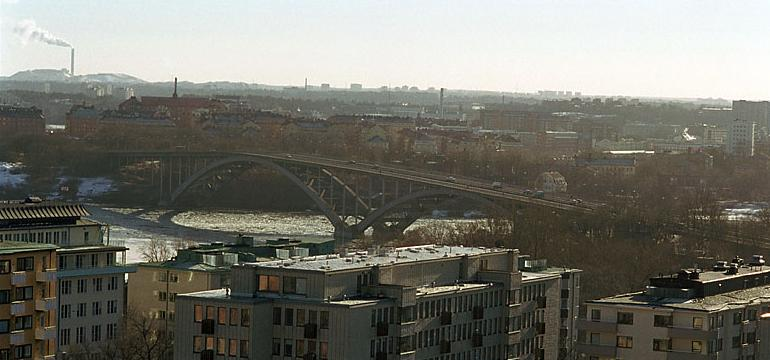
Utkanterna är de platser där allt är smutsigt och söndernött. Här kanske staden till slut skall gå segrande fram - här kanske allt arbete försvinner och läggs ner. Det smutsiga döljes då av markens friska grönska. Det söndernötta och förbrukade skyles över och gömmes återigen undan av gräs och nässlor.
-------------
OCH HÄRNERE ligger en obetydlig del av den stora staden: en klunga baracker med upplysta fönster. På östra sidan av dem stryker en ofullbordad utkantsgata förbi. Och bortom de låga uthusen breder en avskavd, söndernött och övergiven herrgårdpark ut sig. Där växer lindar, lönnar, kastanjer och ekar. Den breda trädbarriären skiljer barackerna från verkstaden. Ty något avstånd skall det vara mellan arbete och vila.
------------------------
Knut Ivar Eld satt inne på sitt rum i baracken och läste. Rummet liknade nästan en munkcell: kalt,
trist, ogästvänligt. Genast till höger om dörren stod en nerrökt kamin. På vintrarna, då han kom hem
efter dagsarbetets slut, kunde det hända att den otympliga gjutjärnspjäsen var överdragen med ett vitt
flor av frost. De bräckliga träväggarna höll inte kölden ute
på ett sådant sätt man kunde ha rätt att fordra av en fullt människovärdig bostad. Om Knut Ivar Eld för
egen del sökte anledningar till klagomål, hade det inte varit svårt för honom att finna sådana. Ibland
inträffade det att vattnet i handkannan frös till is under natten. Och då vinden låg på från nordväst,
sopades genom alla läckande springor in en bred driva av snö som ofta sträckte sig ända framtill sängen.
De övriga hyresgästerna kämpade naturligtvis med samma svårigheter. Men de var praktiska och förstod att nödtorftigt avhjälpa dylika bagateller. De tätade alla läckor med granris, lade vadd i fönstren och klistrade pappersremsor för springorna ( det var barnens största nöje att om kvällarna sitta uppkrupna på en stol och lyssna till hur vinden visslade gällt i dessa klisterremsor ). Knut Ivar Eld var emellertid inte praktisk. Nere på verkstaden uppträdde han visserligen som en yrkesman bland alla de andra, men så snart han kommit hem och sköljt sotet ur ögonen, förvandlades han till en annan människa. En människa som gick ner sig i böckernas verklighetsskildringar. Och som ibland även kunde drömma sig bort med de toner som han lockade fram ur sitt dragspel. Hans bostad såg ut därefter. Några stolar; ett rankigt bord ( belamrat med höga travar av böcker ) , en slarvigt uppbäddad säng vid högra långväggen; smutsiga, nerrökta gardiner för fönstren; högar av tidningar och tidskrifter på golvet ( som nästan dolde den söndertrampade smutsbruna korkmattan ); en brunbetsad skänk till vänster om farstudörren ( och ovanpå den låg dragspelet, det enda lyxföremålet i hela rummet ) ; tidningsurklipp efter väggarna; en kal, elektrisk lampa utan skärm; stora flockar av grått och tovigt damm på den blottade ledningssladden: här bodde Knut Ivar Eld.
----------------
Den gladlynte pannplåtslagaren
REDAN VID middagsbordet hade det brutit ut över Kalle Klack. Till en början hade han suttit allvarlig som en gravsten och lyssnat till hustruns entoniga, bekymrade vardagsprat. Och det rörde sig som vanligt om pengar. Om saker och ting som fattades. Eller sådant som var på god väg att fattas. Bland mycket annat sade hon även detta.
- Vad ska vi göra? Veden är snart slut! Den räcker knappt en vecka till!
Kalle Klack svarade ingenting. Lyssnade. Väntade på en fortsättning. Beredde sig att komma med ett förslag. Men kunde sedan ingenting hitta på i en hast. För övrigt hade han ingen lust att tänka på sådana saker just nu. Potatisen var varm och fläsket smakade gott. Han ville äta i fred. Men hustrun hade ännu inte talat till punkt. Veden var långt ifrån hennes enda problem.
- Gunnars kängor behöver halvsulas. Det talade jag om redan för en vecka sedan.
Klack skrapade med knivbladet upp mjölksåsen från tallriken. Sade med det gemyt han ännu hade kvar:
- Nå, den saken kan ju ordnas. Jag har ett sjok läder liggande hemma.
- Har du verkligen läder?
Klack lite mera belåtet: - Jojomänsan. Det är ju förstås inte alldeles färskt och prima kärnläder. Klen det duger nog ändå. Jag passade på att kapa åt mej en bit då en drivrem sprang häromdan. Och hustrun:
- Halvsulorna måste dit så snart som möjligt. Annars går det hål rakt igenom.
- Ska ske redan i kväll. Det är gjort på ett lite kick. Till Gunnar sade han:
- Kom hit pojke, så får jag se på bubborna dina. Därefter: - Var det ingenting annat?
Ingenting annat? Jo, hon satt mitt uppe i ett berg av bekymmer. Det ena avlöste det andra. Veden som var slut. Gunnars kängor. Elsas trasiga klänning. Den sönderslagna mjölktillbringaren som måste ersättaa med en ny. Bagateller - stora problem. Hennes dag var fylld av sådant och humöret hängde alltid nere vid nollpunkten. Tankarna återkom till bränslet som började tryta i källaren. Det var en mycket viktig historia. Hon måste framlägga sin oro. Och det skedde med en fråga:
- Hur ska vi bära oss åt?
- Så fort jag har ätit ska jag slå dit sulorna åt pojken.
- Men veden ?
- Veden - vad fan nu?
| Den gladlynte pannplåtslagaren. kände hur det började kittla i halsen på honom. Det var det vanliga kvällsraseriet som höll på att övermanna honom. Alltid var det gnat och prat om pengar; om saker och ting som måste anskaffas. Det slog mot honom som en sur disktrasa så snart han kom hem. Han hade sitt goda humör, sin bekymmerslösa uppfattning om världen: allt ordnade sig ändå till slut ( kamraterna kallade honom ju Kalle Klack därför att han hade till vana att med hög röst även mitt under brinnande arbete sjunga visan om den komiske skräddaren med samma namn ). Kamraterna förstod honom. Men hustrun kunde inte stänga mun, hålla tyst, låta honom vara ifred. |
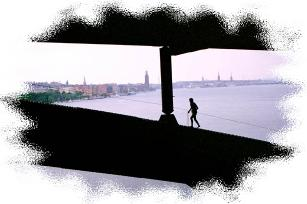 |
Gunnars kängor, Elsas trasiga klänning, den sönderslagna mjölktillbringaren. Vad begärdes egentligen? Lade han inte upp sin avlöning varje fredagseftermiddag på köksbordet: femtisju kronor och åttifem öre! Det var efter kollektivavtalet, varenda pannplåtslagare hade precis lika mycket. Femtisju och åttifem under vanliga oxveckor. Så snart en helgdag kom emellan blev det förstås lite mindre. Det var kronor och ören som hon fick hushålla med precis som hon ville. Och det måtte väl för tusan räcka till för sex personer. Vad behöll han för egen del? Ingenting! Eller knappast ingenting. Sprang en sträng sönder på fiolen, hade han med näppe nöd råd att ersätta den med en ny. En alt kostade femti öre. Nå, en tralling, det kanske inte var så mycket. Men han hade så småningom lärt sig att hellre minska in på ölransonen än göra en anhållan hos hustrun.
Han var rädd om sitt goda humör, och det fick alltid en knäck när det blev tal om pengar. En a-sträng kostade femti öre, nästan lika mycket som tre stycken dricka, en hel dagsranson för hans del. Nå, det gick ju relativt smärtfritt att komma över. Men noterna var så mycket dyrare. Det var längesedan han hade råd att skaffa sig ett par riktigt färska, fina bitar och spela in sig ordentligt på dem. Det han nu fick lära gick efter gehör. Något snappade han upp från grammofonplattorna och ur radiomusiken. Resten fick fingerfärdigheten ersätta. En fiolsträng kunde han komma över, men knappast några nya noter. Det skulle i så fall betyda att han måste försaka sitt öl i mer än en veckas tid. Och det var nästan för mycket begärt. Sitt glada lynne ville han åtminstone ha i behåll utanför hemmets väggar, nere på arbetet och vid båtplatsen.
Kalle Klack satt och tänkte på detta medan vreden sakta steg inom honom. Det var den vanliga, oresonliga kvällsilskan som hustruns slitna rost alltid lyckades locka fram. Hennes beskäftiga och oroliga ord om ditt och datt malde sakta och säkert sönder hans ljusa sinnesstämning. Kalle Klack lyssnade. De svarta ögonbrynen drog långsamt ihop sig till en tjock knut över näsroten. Och till slut reste han sig häftigt upp. Så häftigt att stolen stjälpte omkull bakom honom. Han slog näven i bordet. Skrek:
- Håll käften nu!
Slog ett slag till med näven i bordsskivan. Porslinet skramlade lätt. Han var ju plåtslagare till vardags och därför rätt kraftig i armarna. Gav ett löfte:
- Grabbens kängor ska jag göra färdiga i kväll. Och det finns tillräckligt med ved i ett kullblåst plank borta vid yllefabriken. Där ska jag hämta ett par bördor sedan det blir mörkt.
Och efter en liten paus:
- Men Elsas klänning och mjölktillbringaren ger jag blanka djävulen i!
Elsa stirrade med stora ögon på honom. Och Gunnar kände sig som en anklagad. Smet bort från bordet, försökte göra sig osynlig. Det var ju hans kängor det närmast gällde. De två små som kravlade på golvet upphörde med sina lekar. De satte sig att stirra rakt upp. Kände på något sätt att det var oro och nervositet i luften. Urladdning i de vuxnas värld. Den ena av dem började gråta. Stillsamt. sakta, nästan försynt. Pressade de smutsiga fingrarna hårt mot ögonen medan tårarna långsamt tillrade nerför kinderna.
Men när Kalle Klack slagit näven i bordet två gånger kände han sig genast lugnare. Började vissla litet smått förläget. Han gick ett par slag fram och tillbaka över golvet medan hustrun dukade av bordet. Härinne var allting urtråkigt och trist. Han sneglade mot fiolen. Den hängde säkert på sin spik. Och nu skulle han ge pojkens skor en välbehövlig duvning. Det blev musiken för i kväll.
-----------
REDAN I SLUTET av april och början på maj kan kvällarna vara ganska ljumma. Och det står ett blått dis
och darrar i luften som gör alla sinnen oroliga. Herbert mötte Sonja nere vid det vanliga stället i parken. Han stod och rökte en cigarrett medan han väntade. Han tänkte helt flyktigt på modern, på
systern. Därefter tänkte han på arbetet. Det var skönt att stå här i den svala skymningen och vila
ögonen. Men hans plikt var att sitta över böckerna, att lära någonting. Kanske det skulle bli ett resultat
av det så småningom. En ingenjörsexamen. Kanske! Men hans ögon tålde inte det elektriska ljuset.
Det skar och ristade som knivspetsar i pupillerna när han läst en stund. Det var ett fel som inte
avhjälptes med några
glasögon. Men nu stod han alltså här under träden i den mörka parken och vilade sina ögon.
Vilade ut från den smärta som han åsamkade sig under arbetet. Då den brinnande gasen skar in
i järnet uppstod blå och ultravioletta solar som trängde genom de svartaste skyddsglas. Under
arbetet märkte han inget särskilt. Genom skyddsglasögonen syntes den brinnande acetylengasen
endast som blekröda-blekblåa stjärnor. Och omgivningen i övrigt var insvept i ett matt, smutsigt
ljusdunkel. Nej, under arbetet erfor han ingenting, då var allt som det skulle vara. Men när han
vilat en stund, då han kommit hem och satt och åt eller lutade sig över böckerna började
smärtorna. Smärtorna och den förbannade molande svedan som lamslog hans energi. Själva
arbetet nere på bron var nästan en befrielse. Då kände han ingen osäkerhet, ingen svaghet,
ingen inre hjälplöshet. Från stålkolondrama som reste sig högt ur de vid graniten förankrade
betongdubbarna, sköt brobanedäckets järnbalkar på ömse sidor ut över Riddarfjärdens vatten.
Hundra meter från vardera stranden slutade deras långa antenner i tomma luften. Däremellan
var det en djup avgrund som skulle överbyggas. Och det var han som höll på med det arbetet
tillsammans med något hundratal andra.
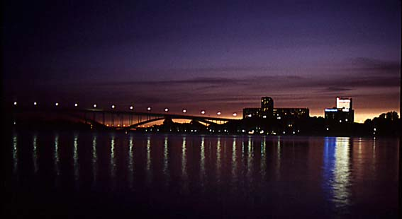
Nu, när han stod i parken och tände ännu en cigarrett medan han väntade på att Sonja skulle komma, kände han att hans händer darrade. Det var en påminnelse om att han suttit hela dagen och skurit upp järn och att han sammanfogat järn mot järn. Hela den ofullbordade bron hade skakat av arbete, av nitmaskiner, cementblandare, paternosterverk och borrmaskiner. Och inte bara det, lyftkranama rasslade fram och tillbaka, hävde upp sina tunga bördor ur de djupt nerlastade pråmarna, järnställningar och stålspiror restes, flottbryggor och underställningar slogs upp, pålkranarnas ramar dunkade och slog, granitblock mejslades ut, det sjöng i stålkablarnas spända linor och armerarna rasslade redan med sitt järn vid anfangerna.
Ja, hela bron hade skakat av arbete; en hög, hård och öronbedövande rytm som larmade mot sin fullbordan. Och Herbert hade suttit gränsle över en balk och stirrat mot den punkt där svetsningslågan ätit sig in i järnet. Djupt under sig hade han vattnet, högt ovanför huvudet den vårblå himlen. En dunkel, livlös färg breddes över allt det han såg genom sina skyddsglasögon. Vattnet nedanför blev gulgrått, himlen ovanför gulblå, och de vita, lätta molnen såg ut som smutsiga vaddtussar. Ett tag på förmiddagen hade det fallit några hastiga regnskurar, därefter hade solen skinit, sedan hade det mulnat på igen. Ett sådant väder det skall vara en riktig vårdag i början på maj: sol och regn, mulet och molnigt - hög, klar luft. Alltsammans endast med några korta timmars mellanrum. Först vid middagstimmen hade han tagit av sig sina glasögon. Det var som om han helt plötsligt hade förflyttats till en annan värld där allt fick klarare färger och fastare konturer. Från de båda landfästena höjde sig det påbörjade brobanedäcket i en jämn kurva framåt-uppåt. Och han arbetade på den yttersta och högsta punkten. Därifrån hade han en ny utsikt, ett nytt perspektiv på den värld som han levat i så länge han kunde minnas. Det var som om han befunnit sig i en flygmaskin: ingen fast mark under fötterna, fri rymd åt alla håll. Och han kunde även se ner på ett stort stycke av Stockholm. Öarna låg nertryckta mot vattnet, flata, liksom sammansjunkna. Vände han sig åt väster, kunde han se långt in i Mälarens solbelysta fjärdar, förbi Gröndal, Ekensberg, Essingen och Fågelön ända ut till Kungshatt; och bakom honom, utmed stränderna av Reymersholm, Liljeholmen, Lövholmen, skymtade alla de välbekanta fabriksbyggnaderna inbäddade i den lätta försommargrönskan. Här uppifrån de sviktande brobalkarna var det första gången han kunde se dem alla på. en gång: där var spritfabriken, där var yllefabriken, där skofabriken, där var galvaniseringsverkstäderna och Pharmacias tekniska fabriker; ja, över hela det södra förstadsområdet låg fabriker och verkstäder utspridda: deras skorstenar försvann slutligen i den anstormande granskogens dunkel. Middagstimmens inbrott signalerades samtidigt av ett hundratal fabriksvisslor och verkstadspipor. Det var korta, ängsliga stön, det var gälla vrål, det var knivvassa visslingar och det var djupa bröl långt nere i basen. Varje fabriksvissla, varje verkstadspipa hade sin egen ton i middagstimmens korta konsert. Och den som hade bott här länge, kunde utan tvekan avgöra till vilken industri de olika sirenerna hörde. Om det var Primus', Beckers eller Lux' fabriker som signalerade; om det var något av de rostiga varven vid Smedsudden, Pålsundet, Lövholmen eller Ekensberg. Och rakt framför honom kurade Rålambshov ihop sig med vedgårdar, båtplatser och skrotupplag. Den långa, smala piren av jord och sten stack ännu ut i vattnet på sidan om den påbörjade brons jättekast. Där ovanför låg Marieberg med sina kaserner och sin ammunitionsfabrik. Grönskan hade kommit och slagit sin lätta slöja om allt det som endast för en månad sedan var naket, trist och grått. Och under middagstimmen hade Herbert suttit på den yttersta av balkarna med skyddsglasögonen högt uppskjutna i pannan och sett på allt detta i dess riktiga, friska och sunda färger: ett glänsande, vingyllene skimmer över staden, vattnet som glittrade blankt och klart under honom, den högsommarblå himlen ovanför huvudet, de ulliga molnen vid horisonten. Och så solen över alltsammans: dess ljus låg och darrade i ett blått dis över gator, hus och vatten. Nedanför hans fötter singlade ett moln av vita måsar, några änder drog snarpande förbi i baktung och ovig flykt. Det var en lustig känsla att sitta och se ner på fåglarna. Se dem ovanifrån. Lite längre bort åt öster ångade ett par breddäckade färjor långsamt och astmatiskt över vattenytan. En galeas med ved kröp tätt upp mot Stadshuset. Helt plötsligt kläddes hon fullständigt av: storseglet föll ner, ögonblickligen följt av gaffelseglet, sedan bärgades stortoppen och gaffeltoppen. Och några sekunder senare tog man hem focken, klyvaren och jagaren. Därefter låg skutan absolut naken. Och däckslastens björkvedsfamnar lyste vita som ett par utbredda lakan nedanför Stadshusets tegelröda murar.
|
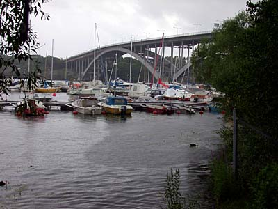 |
Sonja dröjde länge. Herbert tände sin tredje cigarrett. Händerna darrade lätt och pupillerna drogs samman i det skarpa ljuset från den brinnande tändstickan; alltsammans var påminnelser om den gångna dagens arbete: hans händer som timme ut och timme in höll om de rytmiskt vibrerande verktygsskaften, hans ögon som oupphörligen måste stirra mot den punkt där elden träffade järnet, glödgade det, skar sig tvärs igenom. Middagstimmen var en härlig vilostund mitt på dagen. Då ströps all ånga av, då stoppade alla maskiner, då vreds de elektriska strömbrytarna om. Pålkranarna upphörde med sitt monotona dunk, mudderskoporna stannade, paternosterverket stannade, cementblandarna stannade, stenhuggarna lade ner sina klubbor och mejslar; allt blev stilla, tyst, hämtade andan. Och han själv fick skjuta upp skyddsglasen i pannan och se sig omkring med obeväpnade ögon; se att allting ändå inte var smutsigt, smutsgult, smutsblått, smutsvit - |
--------------
DET VAR mitt i veckan. Och det var högtidligt och stilla som på en söndag.
En hel del av oss vaknade väl vid sex- halvsjutiden som vanligt. Sträckte på kroppen, gäspade. Men ingen behövde gå opp om han inte ville. Det var även alldeles lugnt i hela baracken. Inga sängar knarrade, inga röster mullrade. Ingen var det som hostade och stönade och harklade upp gammalt sot ur halsen för att bereda plats åt det nya som skulle komma dit under dagens lopp.
Nej - denna morgon var ingen morgon som förberedde nytt arbete och nya strävanden. Denna dag var en högtidlig dag då det synliga resultatet av våra händers duglighet högtidligt skulle invigas. Därför kunde vi sträcka på kroppen, gäspa sömnigt och långsamt vända oss över på andra sidan för att sova ännu ett slag.
Klockan elva var vi väl ändå halvklädda lite till mans. De bästa byxorna hade fått komma på, vi hade dragit stärkskjortorna över huvudet. Och kragknappen lyste i halslinningen som ett stänk av guld. Själva kragen behövde vi inte besvära oss med på ännu några timmar. Och dessa timmar försökte vi fördriva med småprat här och var inne i lägenheterna. Det var ovant på något. vis. Vi satt stelt och besvärat på stolarna. Våra händer hängde hjälplöst ner mellan knäna och ådrorna laddades av det lojt omkringflytande blodet. Ja - ingen av oss verkade riktigt hemma på något sätt. Varvet var igenbommat, ingen rök steg upp ur verkstadspiporna och själva gick vi här till hälften helgdagsklädda under den del av dagen då vi skulle ha sysselsatt oss med eld och järn. Vi var arbetare, men vi kände inte arbetarens glädje över det avslutade och fullbordade.
|
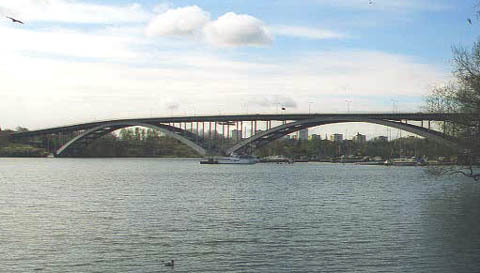 |
Klockan var elva. Den blev också så småningom tre på eftermiddagen. Vi gick i samlad trupp från barackerna till invigningen. Här kastade sig den nya bron i ett par kraftiga språng från strand till strand. Detta hade vi alltså varit med om att göra, det var ett gott stycke arbete som tagit ett par år i anspråk. Nu svepte och svängde flaggparaden utmed det långsträckta brobanedäcket. Det var liksom fest i luften. Solen glimmade då och då till mellan oktoberhimlens drivande moln. Det var väl också ett slags fest. Här var det massor av människor som besvärat sig med att dra på sig jackett, massor av människor som hade hög hatt och band med de blågula färgerna i |
Denna bro var färdig. Den kunde inte bli annorlunda. Och nu skulle den invigas.
Det hela var olustigt och ganska löjligt: Vi stod uppfösta vid brons norra anfang som en skock duvna höns och väntade på att skådespelet skulle börja. För tusan hakar, Koppar-Pelle stönade sakta under det kraftiga grepp som stärkkragen slagit om hans strupe, Jaans grova nävar såg ut att drunkna i de långt nerhängande kavajärmarna och Ryska snillets svarta ansikte stack upp som ett knotigt doppinghuvud på sin långa och smala hals. Men värre ändå hade ingenjörerna och förmännen. De sprang beskäftigt och nervöst omkring i sina förhyrda jacketter och ordnade med tusen detaljer så att allt skulle gå väl i lås. Det såg mer än löjligt ut. De var ju i alla fall ingenjörer och förmän, de var arbetare som kunde sin sak. Och nu tvingades de att uppträda som lakejer och polisbetjänter. Och så började det hela med att en musikkår slängde upp sina blanka mässingsinstrument och spelade en marsch.
| Någon höll tal. Det knastrade och knattrade ur högtalarnas trattar. I en särskild flock stod stadens och statens styresmän. Det var glada män, goda män, män som med självaktning kunde se rakt in mot de surrande filmkamerorna. Dessa män hade steg för steg arbetat sig fram till konungens rådsbord och var nu representanter för en hel del, utom möjligtvis för sin ungdoms ideal. Men de hade höga hattar, de hade självförtroende och var medvetna om sin ställning. Allt som var olämpligt och opassande hade de lärt sig att dölja på ett utomordentligt sätt: de hade sina leenden. Allt som var av obehaglig art flöt långsamt bort i dessa breda grin som var ämnade för folket och framtiden, det hurrande folket och den frihetsfyilda framtiden. |

|
Någon höll ännu ett tal. Någon svarade och tackade. Därefter talades igen. Musikkåren gjorde ett mellanspel med en marsch. Flaggorna smattrade och smällde. Solen sken försiktigt fram mellan regnskyarna. Konungen lyfte på sin hatt och tackade för allt som blivit gjort och sagt. Därefter kallades ingenjörerna fram och fick sina ordnar. Folket hurrade. Allt var glädje och gamman. Koppar-Pelle stönade sakta under kragens stålhårda grepp om strupen. Jaan såg allvarlig ut. Kalle Klack lyssnade med intresse till musikens taktfasta dunder och Ryska snillet tycktes som alltid vara upptagen av funderingar omkring en ny princip som skulle kunna lösa det problem som kallades perpetuum mobile. Här stod vi hela klungan av varvsarbetare uppskjutna mot broräcket och såg helt säkert lite bortkomna ut. Under våra blickar hade vi den nya utsikt över staden som vi ensamma under ett par års tid kunnat tillgodogöra oss. Mot norr, mot öster och mot söder låg staden i en väldig halvcirkel som slöt sig om glädje och sorg, om lidande och lycka. Just nu stod en mörkblå och hotfull molnvägg bakom Kungsholmens mångfärgade husfasader, solskenet sprakade till i en gyllene flamma i stadshustornets översta emblem, rakt fram i öster, skymtade Slussen som en smal strimma av ständigt sprudlande liv och högt uppklättrade på södra bergens branta knallar reste sig massiva block av hyreshus som högfärdigt stirrade ner på den övriga staden. Mot väster låg mängden av små öar lågt och platt nertryckta mot vattenytan. Allt som ännu gick i grönt om vårarna och var lummigt om somrarna skulle snart försvinna och kvävas under nya bostadskvarter. Liksom alla de rostiga och svarta industriområdena i söder var dömda att skrotas ner och lämna rum för nya hus, för nya livsmöjligheter som denna bro var en förmedlare av.
Det var detta vi kunde se ut över: en livlig stad under febrilt arbete.
Ovanför våra huvuden svingade sig ett, par flygmaskiner med larmande motorer och långt nere på fjärden steg röken tjock och svart ur ångbarkassernas skorstenar. När talen hållits, när konungen tackat, när musikkåren, spelat och ingenjörerna tilldelats sina ordnar och förtjänsttecken, rullade de första flaggprydda spårvagnarna ut över bron. Och den mullrade fulltonigt under dem som en jättestor klocka av malm. Mängden hurrade och skrek. Flaggorna smällde och snärtade i vinden. Det var färg och fest med en sol som hastigt glimtade fram mellan kalla oktoberskyar. Och sedan släpptes hela den övriga trafiken lös. Människor till fots, cyklister, bilar och spårvagnar rullade fram i en tung ström. Det var en ström som dränkte oss och sopade undan oss i sitt mäktiga svall. Denna bro, detta jättekast över ett brett vatten, var inte endast något som vi hållit på att arbeta med, var inte endast vår egendom som vi svurit och svettats över, nu tillhörde den tusen och hundratusen andra människor, Här, där brobanedäcket svängde framåt och uppåt från kolonder till kolonder, stod vi i en klunga intill det bräckliga räcket och vi kände oss tafatta och liksom bortglömda trots de många talen och hjärtliga tacksägelserna för ett gott arbete.
| Ja - där stod vi rådvilla och sysslolösa medan livet redan brusade friskt fram genom den nya ådern som blivit öppnad i samhällets stora kropp. De flesta av oss hade händerna lagda i kors bak på ryggen. Det såg kanske ut som om vi gått in för ett frivilligt fängslande av oss själva. Invigningen var avslutad, vi hade fått vårt tack utslungat genom högtalartrattarna och kunde därför återigen bege oss av hem till barackerna. Men vi stod ännu kvar i en samlad hop och såg på trafiken som brusade förbi oss. Såg på himlen, såg på vattnet, såg på staden som rik och mäktig sträckte ut sig på ömse sidor om den breda fjärden. Det kunde vara gott att hålla denna stund i minnet. Att till det yttersta avsmaka den högtidliga invigningen. Ty sedan var det egentligen ingenting mer för oss. Den bro vi |
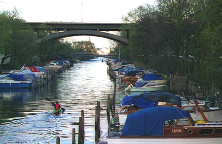 |

|
på det varv som blivit dömt att skrotas ner. Men hon bodde tillsammans med sina tre barn i en av de baracker som skulle stötas omkull och plånas ut till förmån för
nya och mera ändamålsenliga bostadskvarter. Det var hennes hem som gick till spillo. Och med sin
ångestfulla klagan gav hon luft åt allas vår ordlösa bestörtning.
Ja - vi kunde gott stå här en stund och se oss omkring från den bro vi byggt upp medan de muntert smällande flaggorna sakta tyngdes ner och blev blöta under det fallande regnet. Sedan kunde vi gå hem och packa ihop våra ägodelar medan människornas hurrarop ännu ringde i våra öron. Vi hade gjort vårt. |
-----------------
REDAN HADE de första rivningarna begynt. Det gick undan då denna dolda del av världen fördes in i centrum för allas blickar. Plankfodren och de svarta plåttaken revs hastigt upp- och skorstenarna stöttes omkull. De blomsterlister som Albin Ström och fru Zetterkvist skött - med gemensam omsorg begravdes under det nerstörtande virket. Här skulle det inte växa några blommor längre, inga blodröda löjtnantshjärtan, inga himmelsblåa lejongap, inga brandgula ringblommor, inga blygsamma förgätmigej, ingen välluktande reseda. Nej, här skulle det bli en trottoar, en asfalterad körbana. Eller kanske bara ett stort tomrum: ett armerat källarschakt som ständigt var uppfyllt av de stickande gaserna som strömmar ut från kokspannorna som står och ulmar och glöder under nya hyreshus. Ja, barackerna var till hälften rivna, de blottade sitt inre mot den likgiltiga yttervärlden, de visade öppet fram ett gånget halvsekels vardagsmöda och tristess. Här flaggade grå tapeter i oktobervinden. Här lyste vita, nersotade kakelugnar som gängliga gengångare från en förgången tid. Och nu sedan de blygsamma blommorna brutits sönder under de nerstörtande plankbördorna och krossats mot den magra jord de sugit sin näring ur, var det som om hela barackområdet plundrats på något mycket väsentligt: allt verkade mera fattigt och slitet än det gjort någonsin förut.
Ja, barackerna revs och vi skulle flytta. Till och med Knut Ivar Eld hade jagats upp ur sin smutsiga håla. Tillräckligt länge hade han suttit och myst som en gammal ensam och övergiven stäppvarg över sina läroböcker: - Ja chotju - ty chotjejs. Nu hade han emellertid tvingats att slå igen sitt bibliotek och sälla sig till oss där vi surrade samman repen om våra flyttlass. Knut Ivar Eld tog naturligtvis hela uppbrottet på sitt eget vis. Det var endast sina böcker och sitt dragspel han packat ner i en låda. Den övriga skiten kan gärna få brinna för mej! sade han. I övrigt gick han och sökte efter ett sista tillfälle till gräl. Och ett sådant tillfälle behövde han inte vänta länge på. Framåt eftermiddagen bjöd Koppar-Pelles hustru oss på en pilsner och en smörgås överlag. Det var vår sista gemensamma måltid. Jaan anmärkte på den brådska som utvecklades runt omkring oss:
- Här börjar dom tamejfan riva ner taket innan man fått pisspottan ur kommoden.
|
Och många av oss andra tillade var och en sin förnuftiga mening. Varvet hade slagit igen
och vi kastades huvudstupa ut i ett okänt ingenting. Nu var det definitivt slut med de glada och
sorglösa kvällar som fyllts med musik då en hop verkstadsarbetare i mjuka bomullsskjortor och
rentvättade blåbyxor svingade runt med flickorna. Det var slut med de lustiga kvällarna. Och
det var också slut med alla olustiga trätor. Olust och lust försvann. Det fanns en hel del att säga
om en sådan sak som berörde oss pinsamt nära. En man som kranmaskinisten John Gammal
försökte sig på ett skämt: - En sån här uppröjning är ungefär som att sticka in en käpp i ett getingbo. Nagelsmeden Lagergren klämde på sin jämmerpåse som vanligt: |
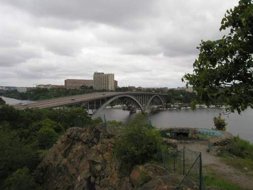 |
Knut Ivar Eld satt tyst och blinkade nervöst med sina inflammerade ögon. När alla sagt sitt ord och för tusende gången synat den märkliga uppbrottsordern som rasat ner över huvudet på oss alla, kastade den rödhårige fantasten sin vana trogen en skopa ovett i ansiktet på oss:
- Jaurès fick sin kula, det inledde världskriget för Frankrikes del. Även vi är några slags jaurès, trots att bara en på tusende av oss är övertygad socialist. Men det gör detsamma. Runt om i världen får vi vår kula, sopas undan, plånas ut, förintas om det gäller en ekonomisk expansion eller materiell intressestrid. Vi har bara att tacka och sedan blåsas bort som blånor. Och det är egentligen inte mer än rätt och riktigt då vi inte lärt att bita ifrån oss, då vi inte kan hålla på det som är vårt, då vi i allmänhet är så förbannat slöa och likgiltiga. Fackföreningarna? Puuh! Det är bara halm och bosch. Lite käbbel fram och tillbaka om oviktiga ting: en femdagarsblockad här, en tvåveckorsstrejk där. Men sen, när det verkligen gäller, då vi som nu får ett ordentligt slag på truten, då bara hukar vi oss ner, väntar, tar undergivet mot mera om det skulle komma. Om man ser i lite större perspektiv, vilken blockad av betydelse har lyckats, vilken viktig strejk har verkligen genomförts? Ingen alls, skulle jag vilja påstå. Strejkapparaten är bara en moderniserad upplaga av det tusenåriga trickset: skådespel åt jollret. Här sitter vi som rädda råttor i våra föreningar och fattar beslut om idel strunt och småsaker. En bojkott mot tyska varor vågar vi oss på, men vem vågar bojkotta nöden och eländet inom det egna landets gränser? Blockad och strejk - att inte en enda människa i hela fackföreningsrörelsen på allvar har insett så antikverade och meningslösa dessa stridsmedel är gent emot det moderna kapitalet. Det är som att försvara sig med rallaresvingar och bond sparkar mot ett bombkastarplan. Se på oss, se på det här varvet. Vi har byggt en bro. Med vilket resultat? Jo, tomtpriserna stiger på grund av sin centralisering. Varvsledningen kan sälja marken med oanad förtjänst. Det är deras chans, och de begagnar sej också helt naturligt av den. Det är en handling i full överensstämmelse med deras moral. Aktieposten placeras över i ett annat verkstadsföretag, antagligen i form av bättre och modernare maskiner. Pengarna kommer nog dit in, pengarna och maskinerna. Men vi stannar utanför portarna. Bolaget kan vara belåtet, dom har slagit två flugor i en smäll: förtjänat en vacker slant på försäljningen av sina tomter, samtidigt som de lyckats skaka av sig en tross av gamla och halvgamla arbetare. Om det funnits någon aktivitet i våra organisationer, om vi varit överlag intresserade för något annat än våra motorbåtar och kolonistugor, då skulle vi inte så här oväntat bli kastade ur sadeln genom vårt eget arbete. Nu får vi böja oss, när det gäller hela vår existens - men vi böjer oss minsann inte då det år fråga om några öres avdrag i timmen, lite kortare semester och sådana dagsaktuella bagateller. Nej, vi har fått en alltför obehaglig vana att plåstra med småsaker, vi är halvmesyrernas män. Och ändå fattas det så mycket i en verklig, effektiv lagstiftning som vi arbetare borde vara intresserade av. Till exempel en lag mot kapitalets skatteflykt, en lag om statlig industrikontroll; vi kunde också höja fältropet: bort med produktionen för profit och fram för produktionen för behov. En skatt på maskiner kanske också vore en idé. En maskin av något slag gör tio man arbetslösa, den maskinen får också betala tio mans årliga arbetsförtjänst till staten. Som det nu är finns det ingenting som hindrar att en företagare genom maskinanskaffning rationaliserar bort femtio-sjuttiofem procent av den anställda arbetsstyrkan.
|
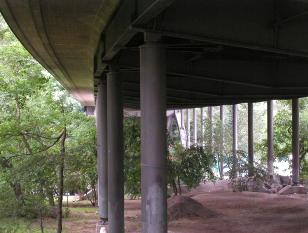 |
Dessa arbetare faller kommunen till last om
de inte ska svälta ihjäl. Sedan kan samme företagare moralisera över den sig alltmera
omkringgripande understödstagarandan. Maskinbeskattning är omöjlig, kanske någon säger, men man beskattar ju redan den maskin som heter automobil. Det är bara att fortsätta på
den inslagna vägen. Men alla dessa förslag är bara mycket små moderniseringar och
uppmjukningar av ett fördelningssystem som redan är ett par århundraden för gammalt. Så länge vi
inte tar vår stora rätt genom lag, går det med oss som med Jaurès, vi blir nerskjutna och
undankastade från vilken post vi än befinner oss på i det ständigt pågående ekonomiska
världskriget!
Så talade Knut Ivar Eld, blinkade nervöst med sina inflammerade ögon och såg på det hela taget lustig och löjlig ut som en uppskrämd nattfågel. |
Vi tuggade långsamt på våra smörgåsar och svalde ner pilsnern samtidigt med Elds okvädinsord. Vad kunde vi svara på detta? Knappast något. Ingen av oss hade haft någon lust att sitta och uggla över så många böcker som den rödhårige kamraten. Därför hade vi heller ingenting att tillägga i sak. Men Kalle Klack, den gladlynte pannplåtslagaren, tycktes aldrig bli berövad sin respektlösa syn på tillvaron och dess skiftande problem:
- Det går upp och ner här i livet. Det går fram och tillbaka. Det gäller att hålla ett stadigt tag så man inte trillar bakut alldeles. Man måste ha svansen styv i svängarna, som min farfar brukar säja.
Mannen Ågren, som under många månader haft sonen Frippes bleka ansikte som ett järtecken framför sina ögon, sträckte i en förtvivlad gest fram sina bägge nävar. De var igengrodda av gammalt verkstadssot och överstrimmade med många ärr.
- Här är mina två händer, sade han, dom har jag försörjt mej med i hela mitt liv. Frippe har gått utan knog i långa tider som ni vet. Nu blir det samma sak med Acke och mej. Kan nån säja vad det är för en djävla mening med hela soppan?
Koppar-Pelle kanske tänkte på ynkryggen Tjompa, då han försökte säga något till tröst:
- A tusan, du är inte den enda.
Och Jaan kanske tänkte på Negern som han vräkt ut genom dörren med en av sina kraftiga svordomar.
- Nej, för djävulen, du är minsann inte ensam. Till och med Lagergren kände väl ett slags dunkel samhörighet med den nya klass i samhället som han plötsligt kommit att tillhöra:
- Nu står bror min och jag och stampar på samma fläck. Sonja kommer inte att få det lätt.
Det var första gången den buttre nagelsmeden uttryckte en tanke som gällde någon annan än honom själv. Herbert vände ofrivilligt bort huvudet. Han hade ansvar på annat håll.
Därefter var smörgåsarna uppätna och pilsnern urdrucken. Vi hade ingenting annat att göra än bryta upp från det sista torftiga gästabudet på denna plats och återgå till stuvningen av flyttlassen. Naturligtvis hade det börjat att regna så smått. Men dessa möbler som låg uppvräkta på handkärrorna var gamla trogna kamrater. De hade utstått slitningar under många år under flera decennier. De tålde också mycket väl vid lite regn. De längst bortersta delarna av barackerna var redan fullständigt nerbrutna. Ingen av oss hade haft lust eller möjlighet att flytta förrän den allra sista dagen. Plankbördorna dansade dånande ner mot den uppblötta marken och det rök muntert av gammalt torrt damm då de gängliga skorstenarna slogs omkull. Nedanför den branta backen låg varvet som ett jättestort, strandat fartyg. Portarna var tillbommade och ingen stenkolsrök bolmade längre upp ur skorstenarna.Ja, varvet var redan blivet till ett gammalt vrak och vi själva kände oss som fnaskiga råttor vilka passar på att fly innan allting gurglar till och försvinner ner i djupet. Bakom oss låg det nerskrotade och brandsvarta arbetsområdet, framför oss drog den nya bron upp sin stolta och djärva profil. Trafiken hade redan tagit den i bruk till det yttersta: människorna och den ständigt växande staden hade erövrat ett nytt område.
| Vi från barackerna stramade till surrningarna medan vi stod och pratade och fumlade med ord, allting var så valhänt och försagt mellan oss just i denna stund. Trots allt gräl, allt gnat som genomkorsat de bräckliga bostäderna, hade varje familj ändå obrottsligt hållit samman: kämpat rygg mot rygg för att slå sig fram genom tillvaron. Albin Ström, Knut Ivar Eld, pensionären Bergström, fru Göransson med sina barn, fru Boström med sin enda dotter, mannen Ågren, kranmaskinisten John Gammal, Koppar-Pelle, Jaan, Herbert Zetterkvist, nagelsmeden Lagergren, Sonja och pannplåtslagaren Kalle Klack, alla var vi människor som skildes, som försvann åt var sitt håll för att börja ett nytt liv - eller för att fortsätta det gamla. Det enda vi lämnade efter oss var en bro som i lätta, luftiga linjer slängde sina spann från strand till strand - samt några initialer och hjärtan inskurna i trädstammarna runtomkring. De ständigt växande |
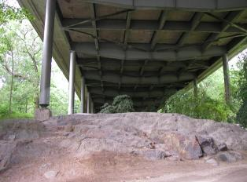 |
|
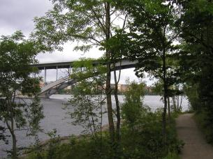 |
Och vart gick flyttlassen? Vart? Det är lätt att säga. Människan slåss, hon kämpar och kanske
till och med skriker. Och då skriker hon rått och ouppfostrat till dess munnen täppes till med en
bit bröd eller ett knytnävsslag. Flyttlassen -? Till nya bostäder naturligtvis, till nya möjligheter.
Stadens utkanter är stora och outtömliga. Där finns oräkneliga hål att gömma sig undan i. Att
leva ett liv från dag till dag. Svetsar krokig och Silverhök, vart hade de tagit vägen? Vesterholm
satt uppe i sin kolonistuga och vände bladen i sin bibel - Vesterholm var för alltid korsfäst vid
åldrandets och fattigdomens pinoträ. Den väg vi själva hade att vandra.
Hemlöst föll regnet över de bortdragande flyttlassen. Hemlösa var vi i oktober månad.
|
- Kommer du ihåg den där historien som Koppar-Pelle berättade för länge sen?
- Koppar-Pelle har berättat mycket. Det är inte gott att minnas allt.
- Men det här var historien från Belgien. Om den där polacken som ramlade ner från en travers i en skänk nyuttaget järn.
- Javisst ja!
- När jag ser det här och vet att hela vintern ligger framför, önskar jag nästan att jag var i den där polackens ställe.
- Du? Prata inga dumheter!
- Jo, det är mitt allvar. En sådan där affär går på ett ögonblick. Pluff! Bara en blå ljuslåga och sedan ingenting mer. Kan man tänka sej något snabbare. Man är ur räkningen för alltid. Försvunnen, bortal Ett med järnet. Man får till och med en hederlig begravning om man har lust till sådan härlighet. Kan man begära något bättre? Alla bekymmer, alla omsorger, alla beräkningar och misslyckanden är som om de aldrig funnits.
- Nej, far nu flera miljoner breddgrader in i helvete. Ett sådant snack!
- Dumt eller inte. Den där polacken ligger i alla fall omsluten av järnet. Om femti år finns det ingen människa som känner till saken. Man kanske hittar järnet och använder det som material till nya gjutningar. Där ser du! Kan man inte göra nån nytta i livet, så kanske man kan komma till användning efter döden.
- Jag har ingenting att säja. Finns det någon som har något nöje av något sådant, så gärna för mej!
- Nå tycker du det här är något nöje då? Halkar man händelsevis ner i en skopa brinnande järn, då är allting glömt, då behövs inga AK-stämplingar mer, inga fattigvårdsbesök, inget kötramp utanför Frälsningsarméns ärtklinik. Man behöver inte besvära en enda satans människa i hela vida världen!
Paus. En lång paus i det strömmande regnet med många trevande tankar. Med många minnen av meningslösa förödmjukelser som vi hört talas om och som det nu var vår tur att pröva på. Och därefter:
- Vart tänker du ta vägen?
- Vet inte säkert. Oppåt norr kanske. Och du?
- Jag sticker i väg söderut, nu när varvet skrotats ner.
- Vart?
- Göteborg har möjligtvis en chans för mej. Eller kanske Malmö!
- Tror du ännu på något inom verkstadsindustrin?
- Visst tror jag! Nithamrarna är dom känsligaste
barometrarna som finns för tillståndet ute i världen. Dom ger utslag med detsamma! När nithamrarna
tystnar, då kan man gott gå hem och lägga sej och dra
något gammalt över sej. Men då dom börjar på för fullt, vet man att det behövs fartyg ute på
sjön, att människorna har behov av varor, att det hela börjar röra på sej ännu en gång!
|
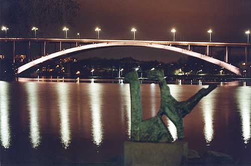 |
- Du har kanske rätt. - Utan tvivel! - Om det slår slint hos Kockum eller Götaverken, vart tänker du dej då? - Jag fortsätter vidare söderut så långt pengarna räcker. Köpenhamn kanske, Hamburg eller Rotterdam. Jag har redan stampat på överrocken som du ser, så jag vill komma så långt ner mot värmen som möjligt.
- Ja, hej då! |